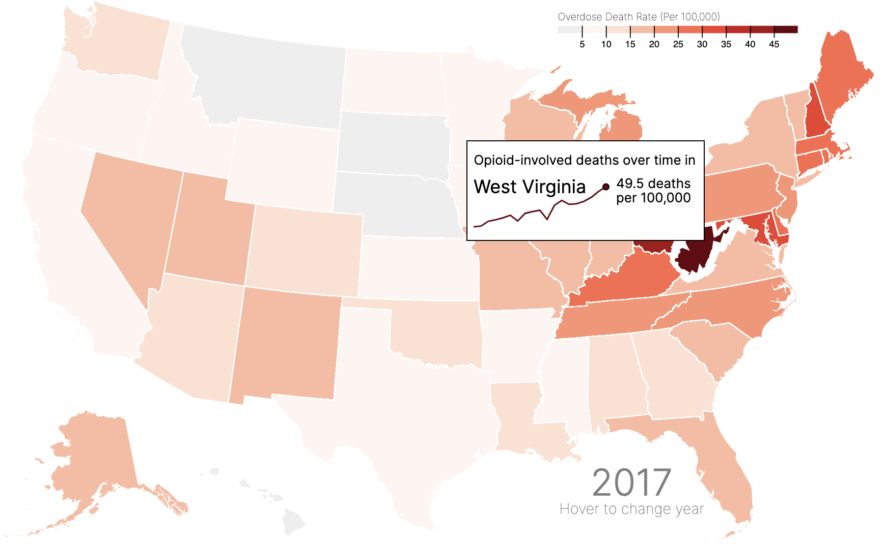

How (and Why) to Add a Chart to Your D3.js Tooltip
I think tooltips are one of the most underrated parts of a visualization. When users are initially confused by a visualization, they often hover over a data point of interest to get more information.
Unfortunately, many tooltips fail to really illuminate much about our data. They often recapitulate what is already being presented without clarifying any of the confusing parts of the data. Most frequently, I see (and even create 😦) tooltips which present the most basic information (in a map, a tooltip would present the state name and the value of interest), and nothing else!
Of course, there’s nothing wrong with these kinds of tooltips. But they are truly doing the bare minimum, and, as a result, they’re missing out on the full potential of tooltips. If users are actively seeking more information by hovering over data, we ought to reward them with the most helpful and interesting information we can.
That’s why I recently updated one of my tooltips from a static presentation of textual information to a line chart depicting change over time. In other words, I went from this:

to this:
Why did I make that change?
The former tooltip provided information which was rather uninteresting. Although it clarified the exact rate of overdose deaths in a given state at a given time, it didn’t do much else. It did provide the year currently in view, but this was also visible in the bottom right corner of the visualization! It also provided the state name, but most of my viewers have likely taken US geography in middle school.
Thus, this tooltip was rather redundant. At best, it provided the exact rate, so that a viewer could compare two states, or learn more information about a given state without solely relying on color encoding ( which can be somewhat unreliable when it comes to quantitative encoding, as is the case in a choropleth map).
The new tooltip shows a trend over time. It also shows the state name (just in case you skipped that day in US geography!), and also the most recent data on overdose deaths. Because this map is meant to show how the opioid crisis has evolved, showing a line chart for each state in my tooltip allows the user to explore state-by-state trends on hover! This is much easier than hovering on each state during each year and trying to keep track of the trends.
For example, hovering on West Virginia, which in 2017 seemed to have the highest opioid-involved overdose death rate (as indicated by it having the darkest shade of red), reveals that its also experienced one of the largest over-time increase in this rate since 1999:

So, how do you do it?
Great question! It’s thankfully not that hard, but the payoff is huge. The shift from my old, boring tooltip to my new, sexy one took only a couple of hours, thanks to a few Stack Overflow answers and online examples.
Step 1: Load d3-tip
The process mostly relies on d3-tip, which you can learn more about
here.
You can load d3-tipwith the following code:
<script src="https://cdnjs.cloudflare.com/ajax/libs/d3-tip/0.7.1/d3-tip.min.js"></script>
Step 2: Create a tooltip object
Next, you initialize your tooltip, give it a class (for CSS styling), and provide the specified offset. In my example, I define my offset according to the
user’s mouse position. That way, if a user hovers over an eastern state, the tooltip doesn’t disappear off the screen!
// define the tooltip
var tool_tip = d3.tip()
.attr("class", "d3-tip")
// if the mouse position is greater than 650 (~ Kentucky/Missouri), offset tooltip to the left instead of the right
.offset(function() {if(current_position[0] > 650) {
return [-20,-120] }
else { return [20,120]}
})
// input the title, and include the div
.html(
"<p>Opioid-involved deaths over time in</p><div id='tipDiv'></div>"
);
svg.call(tool_tip);
The most important part here is
.html(
"<p>Opioid-involved deaths over time in</p><div id='tipDiv'></div>"
);
where we define the html that creates the tooltip itself. In our case, we provide a title, “Opioid-involved deaths over time”, and also specify the div that the tooltip should include.
Step 3: Create the tipDiv object
Finally, we can create the tipDiv object we referenced in the above code. The object will be created on mouseover of the group of interest (in my case, states). Thus, the code will look something like this:
states = svg.append("g")
.attr("class", "states")
.selectAll("path")
.data(topojson.feature(us, us.objects.states).features)
.enter()
.append("path")
.attr("d", path)
.on('mouseover', function(d) {
// define and store the mouse position. this is used to define tooltip offset, seen above.
current_position = d3.mouse(this);
// define current state
current_state = nameById[d.id]
// show the tooltip
tool_tip.show();
After that initialization and show function, we can define the tipDiv object:
var tipSVG = d3.select("#tipDiv")
.append("svg")
.attr("width", 220)
.attr("height", 55);
tipSVG.append("path")
.datum(overdoses.filter(function(d) {return nameById[d.id] == current_state}))
.style("stroke", function() {
if (rateById[d.id] < 10) {
return "grey"
} else {
return color(rateById[d.id])
}
})
.style("stroke-width", 1.5)
.style("fill", "none")
.attr("d", line)
tipSVG.append("circle")
.attr("fill", function() {
if (rateById[d.id] < 10) {
return "grey"
} else {
return color(rateById[d.id])
}
})
.attr("stroke", "black")
.attr("cx", 130)
.attr("cy", y_tooltip(rateById[d.id]))
.attr("r", 3)
tipSVG.append("text")
.text(rateById[d.id] + " deaths")
.attr("x", 140)
.attr("y", function() {
if (y_tooltip(rateById[d.id]) < 15) { return 10 }
else { return y_tooltip(rateById[d.id]) - 7 }
})
tipSVG.append("text")
.text("per 100,000")
.attr("x", 140)
.attr("y", function() {
if (y_tooltip(rateById[d.id]) < 15) { return 24 }
else { return y_tooltip(rateById[d.id]) + 7 }
})
tipSVG.append("text")
.text(current_state)
.attr("x", 0)
.attr("y", 15)
.style("font-size", 18)
.style("font-weight", 400)
})
.on('mouseout', tool_tip.hide)
What’s happening here? Let’s look at one piece at a time.
First, we define the object and name it tipSVG. tipSVG selects #tipDiv (defined in our d3-tip) and appends an SVG. We also define the width and height of the tooltip.
var tipSVG = d3.select("#tipDiv")
.append("svg")
.attr("width", 220)
.attr("height", 55);
Next, we append a path to that SVG. This could be a circle, or a rectangle, or any other appendable shape. Because I am drawing a simple line, we use path.
tipSVG.append("path")
.datum(overdoses.filter(function(d) {return nameById[d.id] == current_state}))
.style("stroke", function() {
if (rateById[d.id] < 10) {
return "grey"
} else {
return color(rateById[d.id])
}
})
.style("stroke-width", 1.5)
.style("fill", "none")
.attr("d", line)
In defining the d attribute, you see I use the phrase line. This is defined earlier in my code to return the x and y position of each data point, to create the path itself.
var x_tooltip = d3.scaleLinear()
.domain(d3.extent(overdoses, function(d) { return d.year; }))
.range([ 0, 130 ]);
var y_tooltip = d3.scaleLinear()
.domain([0, 60])
.range([ 50, 0 ]);
var line = d3.line()
.x(function(d) {
return x_tooltip(d.year);
})
.y(function(d) {
return y_tooltip(+d.rate);
})
Lastly, we add a circle at the end of the line to signify the final data point. We also add the text label for the year 2017.
tipSVG.append("circle")
.attr("fill", function() {
if (rateById[d.id] < 10) {
return "grey"
} else {
return color(rateById[d.id])
}
})
.attr("stroke", "black")
.attr("cx", 130)
.attr("cy", y_tooltip(rateById[d.id]))
.attr("r", 3)
tipSVG.append("text")
.text(rateById[d.id] + " deaths")
.attr("x", 140)
.attr("y", function() {
if (y_tooltip(rateById[d.id]) < 15) { return 10 }
else { return y_tooltip(rateById[d.id]) - 7 }
})
tipSVG.append("text")
.text("per 100,000")
.attr("x", 140)
.attr("y", function() {
if (y_tooltip(rateById[d.id]) < 15) { return 24 }
else { return y_tooltip(rateById[d.id]) + 7 }
})
tipSVG.append("text")
.text(current_state)
.attr("x", 0)
.attr("y", 15)
.style("font-size", 18)
.style("font-weight", 400)
})
And finally, we hide the tooltip on mouseout:
.on('mouseout', tool_tip.hide)
Thanks for reading! You can play around with the visualization and checkout the tooltip for yourself here (find the fullscreen version here):
Connor Rothschild
Undergraduate at Rice University
I’m a senior at Rice University interested in public policy, data science and their intersection. I’m most passionate about translating complex data into informative and entertaining visualizations.